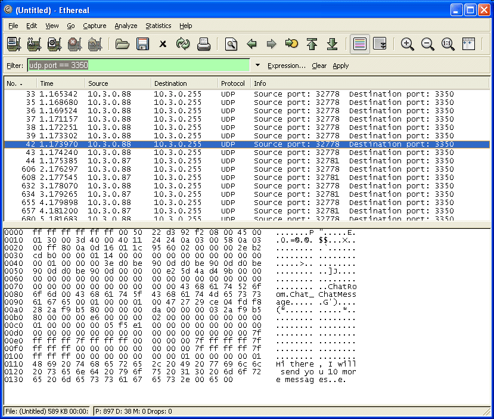
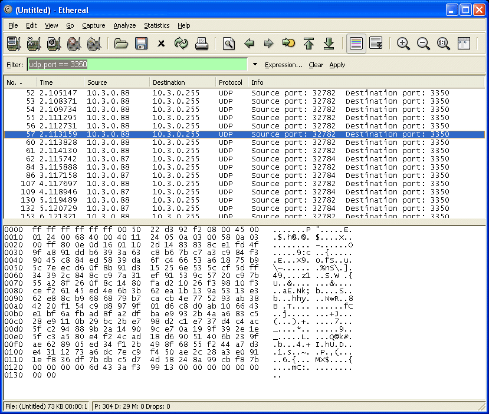

4. Secure Networking Tutorial¶
This tutorial demonstrates secure networking features of Vortex OpenSplice.
4.1. Prerequisites¶
DDS applications on a single host use shared memory for inter process communication. Network communication is needed only in scenarios running DDS applications on multiple hosts. To follow the demonstration of OpenSplice’s secure networking features you will need at least two machines connected to the same IP network and OpenSplice installed. Please refer to OpenSplice Getting Started Guide to install OpenSplice on these hosts.
This tutorial is based on the Chat Tutorial delivered with OpenSplice (see $OSPL_HOME/examples/dcps/standalone/*/Tutorial).
To demonstrate OpenSplice’s secure networking features, no changes to the applications’ source code is necessary. Please refer to the Chat Tutorial README.txt file and be familiar with building and running the applications (of your preferred programming language) before continuing. Please build and run the Chat Tutorial applications on all hosts. A more in-depth description of the Chat Tutorial can be found in the DCPS C Tutorial Guide.
4.2. Preparation¶
The Chat Tutorial gave a brief introduction to a typical DDS application.
Before activating any security configurations you should know how to start OpenSplice with a customized configuration.
 Modifying the default configuration is not recommended
because it might affect other users or applications.
Modifying the default configuration is not recommended
because it might affect other users or applications.
4.2.1. Customizing OpenSplice Configuration¶
Default settings for OpenSplice are read from a configuration file located at <OSPL_HOME>/etc/configs/ospl.xml.
To customize settings it is best to run OpenSplice using a different configuration file.
Create a file named ospl.xml with the content listed below in the Chat Tutorial’s directory:
<OpenSplice>
<Domain>
<Name>OpenSplice Security</Name>
<Database>
<Size>10485670</Size>
</Database>
<Lease>
<ExpiryTime update_factor="0.5">5.0</ExpiryTime>
</Lease>
<Service enabled="true" name="networking">
<Command>snetworking</Command>
</Service>
</Domain>
<NetworkService name="networking">
<Partitioning>
<GlobalPartition Address="broadcast"/>
</Partitioning>
<Channels>
<Channel default="true" enabled="true"
name="BestEffort" reliable="false">
<PortNr>3340</PortNr>
</Channel>
<Channel enabled="true" name="Reliable"
reliable="true">
<PortNr>3350</PortNr>
</Channel>
</Channels>
<Discovery enabled="true">
<PortNr>3360</PortNr>
</Discovery>
</NetworkService>
</OpenSplice>
 Windows users should change the value of the configuration
element at OpenSplice/Domain/Service/Command to snetworking.exe.
Windows users should change the value of the configuration
element at OpenSplice/Domain/Service/Command to snetworking.exe.
Stop OpenSplice if it is already running.
To tell OpenSplice to use this file for configuration, the system variable OSPL_URI has to be set with a file URI pointing to the just-created configuration file. For example:
% export OSPL_URI=file://ospl.xml
will point to a file named ospl.xml in the current working directory and
% export OSPL_URI=file:///home/user/ospl.xml
will point to ospl.xml in a /home/user directory. Ensure that you have read and write permissions for the file pointed at.
Now start OpenSplice again. You will see that the status message contains a new DDS domain name.
% ospl start
% Starting up domain "OpenSplice Security" . Ready
Note that when running OpenSplice with the configuration listed above, each OpenSplice node will broadcast heartbeat messages every second, targeting the UDP port 3360.
These messages are used to discover other OpenSplice nodes in the network. Only when a second OpenSplice node has been discovered in the network by heartbeats ChatRoom messages will be broadcasted to the UDP target port 3340 (best effort) and 3350 (reliable). So, do not expect any ChatRoom messages to show up in the network traces as long as you operate with a single OpenSplice node.
4.2.2. Running Chat Tutorial Without Security¶
Before securing the Chat Tutorial we will run the applications without security activated by using the configuration presented above. This way we can analyse network traffic and identify potential vulnerabilities.
Run the MessageBoard application on one host by executing:
% ./exec/MessageBoard
On the other host run the Chatter application by executing:
% ./exec/Chatter
The MessageBoard application will print the following output:
% Chatter 1: Hi there, I will send you 10 more messages.
% Chatter 1: Message no. 1
% Chatter 1: Message no. 2
% Chatter 1: Message no. 3
% …
 If running the applications in another shell, ensure that the
system variable OSPL_URI points to the same configuration file
as indicated above when starting OpenSplice. Otherwise the
applications won’t start up correctly.
If running the applications in another shell, ensure that the
system variable OSPL_URI points to the same configuration file
as indicated above when starting OpenSplice. Otherwise the
applications won’t start up correctly.
To analyse network traffic you may use a tool like Wireshark [1]. Re-run the Chatter application with Wireshark capturing traffic from your network interface. You should see some UDP packets being captured. Analysing packets sent to UDP port 3350 shows the plain text content of our Chat Tutorial messages as you can see in the following screen:
OSPL Sniff Showing Unencrypted Traffic
{kind=link}
4.3. Activating Secure Networking¶
At this point the Chat Tutorial applications should work fine using your own configuration file on both hosts. Up to now all network traffic is sent unencrypted as you can see in the illustration above (OSPL Sniff Showing Unencrypted Traffic).
4.3.1. Simple Setup Using GlobalPartition¶
To activate encryption, you must shut down the tutorial applications and OpenSplice before modifying the configuration file.
Two steps have to be done for a simple setup.
First, add a new security profile to the network service configuration. This defines details of encryption, like the algorithm and the secret cipher key to be used.
<NetworkService name="networking">
…
<Security enabled="true" >
<SecurityProfile Name="GlobalProfile"
Cipher="blowfish"
CipherKey="000102030405060708090a0b0c0d0e0f"
/>
</Security>
…
</NetworkService>
Second, you have to associate this security profile with a network partition. Enhance the existing global network partition with a new attribute: SecurityProfile="GlobalProfile". All network traffic sent by the global partition is encrypted using settings from the assigned security profile.
<NetworkService name="networking">
…
<Partitioning>
<GlobalPartition Address="broadcast"
SecurityProfile="GlobalProfile"/>
…
<Partitioning>
…
</NetworkService>
As an alternative to modifying the configuration file as described above, you can use the complete example configuration listed below for setup. To avoid problems, ensure that all hosts use the same configuration. Restarting OpenSplice and the Chat Tutorial applications using the modified configuration will enable encrypted network traffic. Again, you may use Wireshark to analyse messages sent through the network. As you can see in the screen shown below, it is not possible to read plain text from chat messages exchanged.
OSPL Sniff Showing Encrypted Traffic
{kind=link}
<OpenSplice>
<Domain>
<Name>OpenSplice Security</Name>
<Database>
<Size>10485670</Size>
</Database>
<Lease>
<ExpiryTime update_factor="0.5">5.0</ExpiryTime>
</Lease>
<Service enabled="true" name="networking">
<Command>networking</Command>
</Service>
</Domain>
<NetworkService name="networking">
<Partitioning>
<GlobalPartition Address="broadcast"
SecurityProfile="GlobalProfile"/>
</Partitioning>
<Security enabled="true" >
<SecurityProfile Name="GlobalProfile"
Cipher="blowfish"
CipherKey="000102030405060708090a0b0c0d0e0f"/>
</Security>
<Channels>
<Channel default="true" enabled="true"
name="BestEffort" reliable="false">
<PortNr>3340</PortNr>
</Channel>
<Channel enabled="true" name="Reliable"
reliable="true">
<PortNr>3350</PortNr>
</Channel>
</Channels>
<Discovery enabled="true">
<PortNr>3360</PortNr>
</Discovery>
</NetworkService>
</OpenSplice>
If the cipher key is changed in the configuration of only one host (ensure that the key-length is kept the same) and OpenSplice and the Chat Tutorial applications are restarted you will notice that messages sent by the Chatter application won’t reach the MessageBoard running on the other host. On the receiving host a warning message will be logged in the ospl-info.log file. This file is located in the start-up directory, by default.
### Report Message ###
Type : WARNING
Context : networking
nw_plugReceiveChannelReadSocketNonBlocking
File : ../../code/nw_plugReceiveChannel.c
Line : 1560
Code : 0
Description : decoding failed
Node : shark1.de.prismtech.com
Process : networking (5338)
Thread : Discovery[@enabled!='false'] b7d1dbb0
Timestamp : 1184225057.899220000 (Thu Jul 12 09:24:17 2007)
 Before following the instructions in the next section, please
restore the correct cipher-keys and restart the OpenSplice
services.
Before following the instructions in the next section, please
restore the correct cipher-keys and restart the OpenSplice
services.
4.3.2. Advanced Setup Using Network Partitions¶
In OpenSplice, DDS topics and DDS partitions can be mapped onto additional network partitions. This allows the separation of network traffic between different applications sharing the same DDS domain. OpenSplice secure networking enables you to use different cipher keys for each network partition to enable confidentiality and integrity of the data exchanged between different applications. For example, the following declaration maps all topics from ChatRoom partition onto a dedicated ChatRoom network partition using an exclusive multicast address instead of using the GlobalPartition:
<NetworkService name="networking">
...
<Partitioning>
<GlobalPartition Address="broadcast"
SecurityProfile="GlobalProfile"/>
<NetworkPartitions>
<NetworkPartition Name="ChatRoomPartition"
Address="230.230.230.1"
SecurityProfile="ChatRoomProfile" />
</NetworkPartitions>
<PartitionMappings>
<PartitionMapping DCPSPartitionTopic="ChatRoom.*"
NetworkPartition="ChatRoomPartition"/>
</PartitionMappings>
</Partitioning>
<Security enabled="true">
<SecurityProfile Name="GlobalProfile" Cipher="null"/>
<SecurityProfile Name="ChatRoomProfile"
Cipher="aes128"
CipherKey="file:///my/secrets/aes128-chatroom-key.txt"/>
</Security>
...
</NetworkService>
With the security feature enabled, the global partition and each network partition can be associated with its own security profile. In our example we refer to GlobalProfile and ChatRoomProfile. Each security profile defines the cipher to be used. The NULL cipher used in GlobalProfile may be used for debugging purposes or for single topics/partitions that do not require protection.
The configuration sample above also demonstrates the cipher keys may be stored in an external file too. The key within the file is encoded as a hexadecimal-string, in other words a 16-Byte key is formed of 32 characters, for example: 0f0e0d0c0b0a09080706050403020100. External files are the preferred way to store keys, to keep them confidential.
 Permissions for the key files should be set so that nobody
except the OpenSplice core services may read the files.
Storing the keys in-place in the configuration file which is
read by each DDS application on start up would be a potential
leak of secret information.
Permissions for the key files should be set so that nobody
except the OpenSplice core services may read the files.
Storing the keys in-place in the configuration file which is
read by each DDS application on start up would be a potential
leak of secret information.
| [1] | See http://www.wireshark.org for further information. |

Table Of Contents
Previous topic
3. Secure Networking Configuration